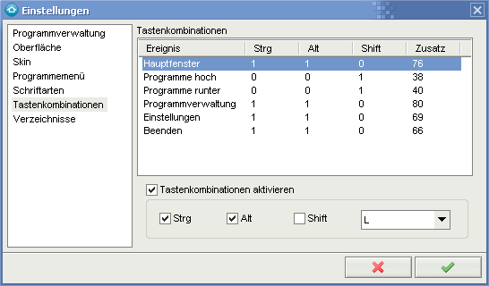

Hier können globale Tastenkombinationen definiert werden.
Diese können sich mit anderen Anwendungen ins Gehege kommen und sollten gut
bedacht werden.

Zum ändern einen Einstrag auswählen und im unteren Abschnitt Einstellungen vornehmen.
Mit Strg, Alt, Shift und der dazugehörigen Taste legen Sie die Tastenkombination fest.
Falls Sie keine Tastenkombinationen benutzen möchten, so deaktivieren Sie die Option
Tastenkombinationen aktivieren.